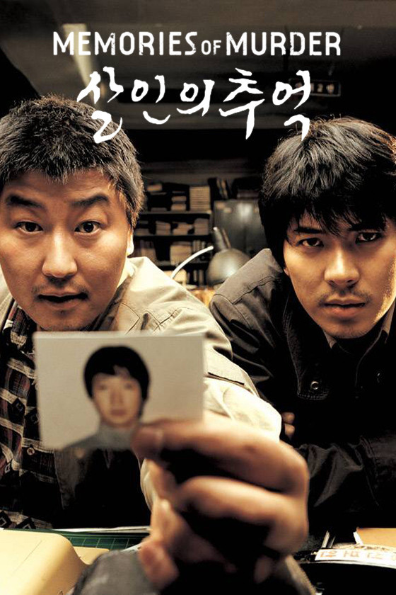

Trama: Nel 1986 in una piccola provincia coreana, tre investigatori lavorano sul caso di diverse donne vittime di stupro e omicidio da un colpevole sconosciuto.
Regista: Bong Joon Ho
Anno di uscita: 2003
Durata: 131 minuti
Cast principale:
KinoLover - ⭐⭐⭐⭐⭐ (5/5)
"Bong Joon-ho mescola giallo e dramma sociale con maestria. Song Kang-ho è sublime come detective frustrato. Quella scena finale nello campo di grano? Ti rimane nell'anima per giorni. Più crudele di un vero cold case!"
NoirFan - ⭐⭐⭐⭐ (4/5)
"Il ritmo è volutamente claudicante come l'indagine, ma alcuni passaggi risultano dispersivi. La ricostruzione degli anni '80 coreani è perfetta. Il momento del tunnel con la lucciola è pura poesia nera."